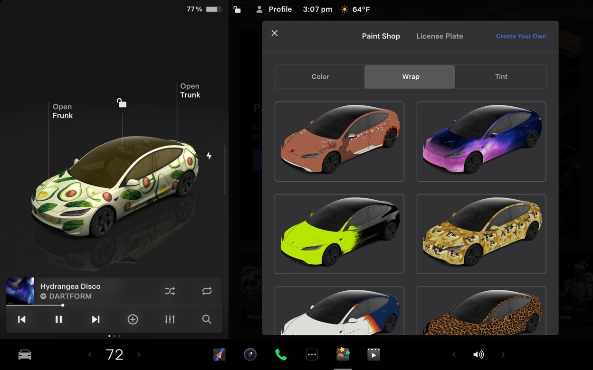
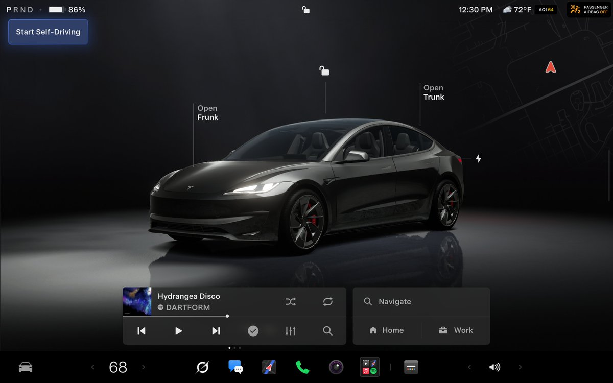
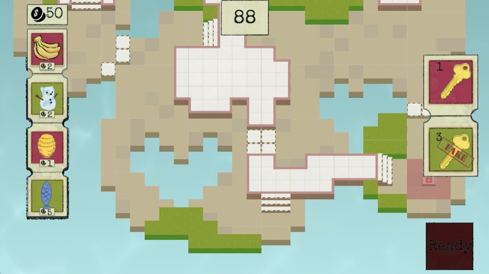
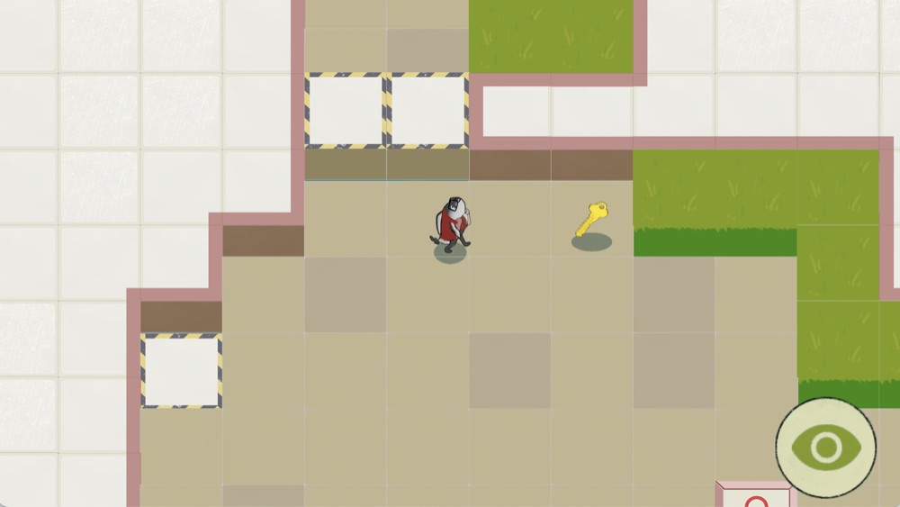
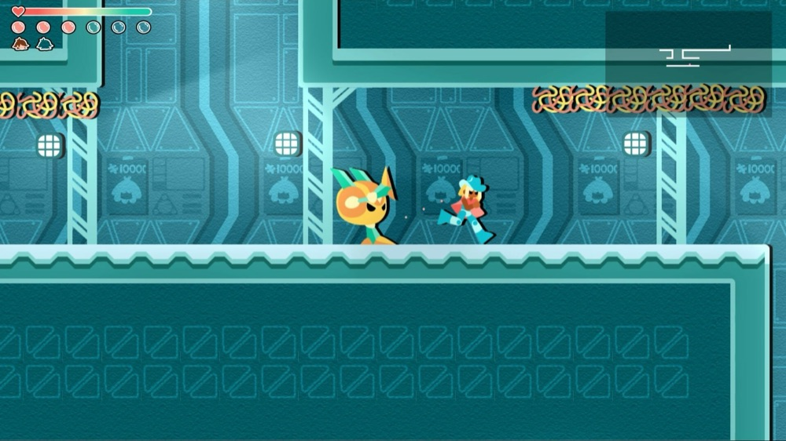
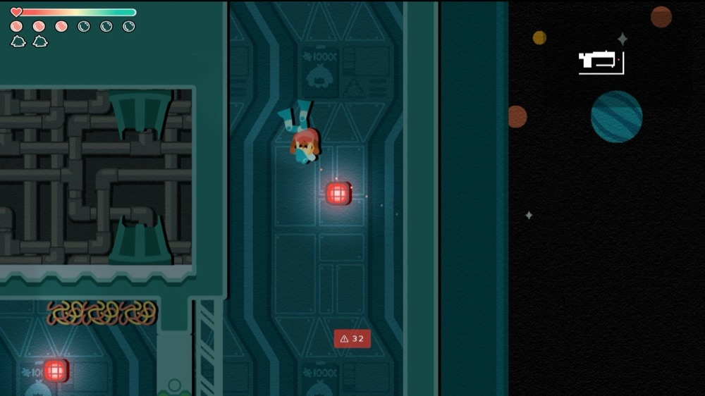
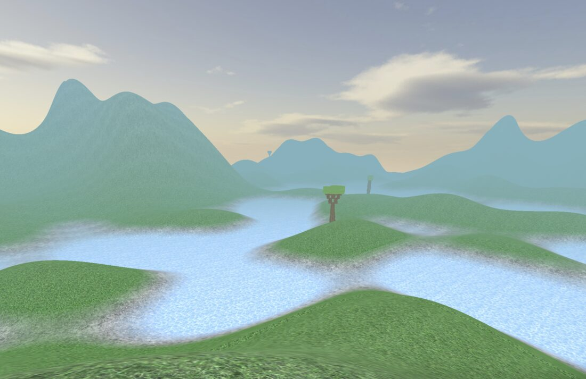
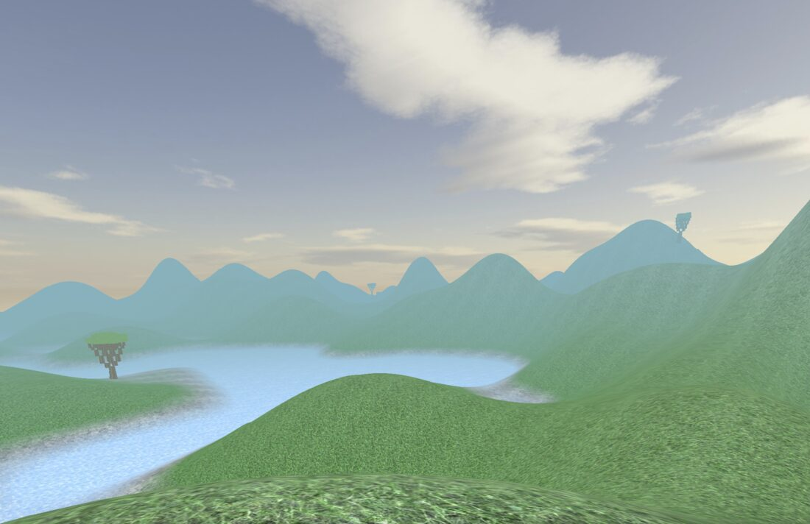

I work as a software engineer on Tesla's Vehicle Software team. I focus on 3D UI, including the 3D vehicle interface when parked, self-driving visualization, and customization features.
I graduated from Cornell University in 2025 with a Bachelor of Arts in Computer Science, summa cum laude.
Tesla
I led the implementation of Tron Mode on a rapid timeline, shipping it in both Godot and Unreal Engine. Activating Tron Mode turns the car into the Light Cycle in the UI. I integrated the new park environment and Light Cycle models, created a light trail effect with dynamic geometry and a custom shader, changed cameras to showcase the bike, and added motorcycle tilting visuals. I worked with teammates on integrating Tron Mode with turn signal, intro video, and lightbar effects.
Paint Shop lets owners customize their car in the UI visualization. I implemented the feature for applying wraps, including user-designed ones uploaded over USB and from the mobile app. I added window tint and license plate text customization as well.

I implemented 3D UI in Unreal Engine for the Cybercab Robotaxi experience, including the rider ingress and egress screens.
I worked on the initial bring-up of the Unreal Engine visualization for Model 3 and Model Y. I ported features over from Godot, including scene markers and camera views, and added systems that let designers author skyboxes and lighting per vehicle.

Personal


Built for Cornell's advanced game development class and awarded Most Innovative at the end-of-semester showcase. The game is a 1v1 duel in two phases: first you place traps to stop your opponent from reaching the key and the exit, then you run for the exit yourself while dodging their traps and setting off your own.
I was Programming Lead for the seven programmers on the team, helping design the system architecture and leading code review. I built the trap-placement phase and its touchscreen UX. I also implemented movement, collision, and the elevation and render order logic behind the game's 3/4 perspective.


You play as a space rogue out to bring down a robot regime, flipping gravity and spitting gum to infiltrate spaceships, steal their power sources, and get out before everything blows up. Built with a team of eight for Cornell's intro game development class.
I contributed to concept and level design, and programmed the dynamic scrolling camera, the gum mechanics, doors and crushers, and the Tiled level parser. I also worked on the initial Box2D lights bring-up, collision handling, and level loading.


A procedurally generated, never-ending world. Built with two others for Cornell's Intro to Computer Graphics class. I wrote the player controls, an infinite terrain system with chunks, and the atmospheric haze shader. I also tuned the noise function driving the world generation.